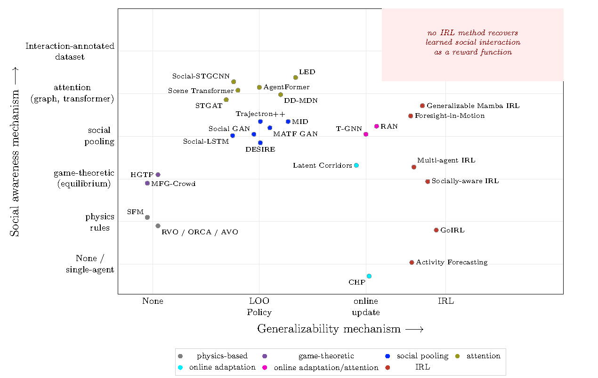
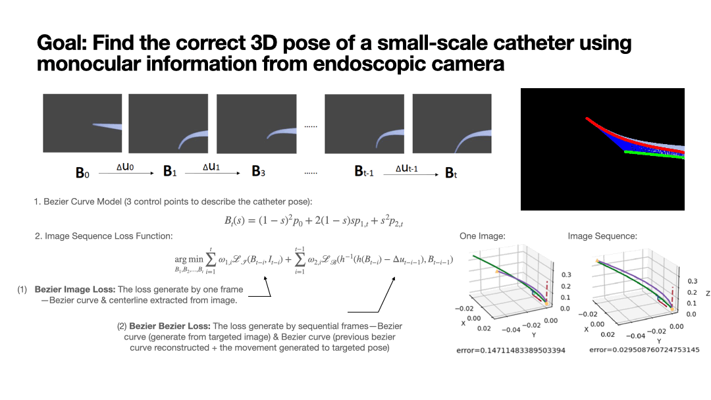

About
- I am a PhD student specialized in Computing Science at Simon Fraser University, advised by Dr. Mo Chen (2023 – present). Check out the lab website: Mars Lab.
- I obtained my master degree at University of California, San Diego with a major of Mechanical and Aerospace Engineering in The Safe Autonomous Systems Lab (2021 – 2023).
- I worked as a research intern at MaRobot AI in Vancouver on probabilistic human prediction with online intention inference (2025 – 2026).
- Previously, I worked as a research assistant in the Institute of Medical Robotics at Shanghai Jiaotong University (2020 – 2021).
- I received my B.Eng degree at Tongji University, China majoring in mechanical design, manufacturing and its automation (2015 – 2020).
- I was also an exchange student at University of California, Berkeley (2019).
- My Research Interest lies in Machine Learning, Artificial Intelligence, Reachability, Control Theory, Medical Robots, and Generalizable, Socially-aware Human Prediction for Robot Navigation.
Skills
- Matlab, Python, C/C++, and LaTeX.
- Packages & tools: Jax, HeteroCL, PyTorch, TensorFlow, NumPy, OpenCV, ROS/ROS2, Blender, Gazebo, and CoppeliaSim.
- Familiar with mechanical design tools such as AutoCAD and SolidWorks.
- Languages: English and Mandarin.
- Love skiing and playing video games at leisure time.
Publications
- Minh Bui*, Chong He*, Jacob Bayless, Mo Chen, Rethinking Intention as Utility Function:
Confidence-Based Prediction of Human Intentions for Social Robot Navigation, IEEE Transactions on Robotics, 2026 Apr 27 (in submission)
- Minh Bui, Hanyang Hu, Chong He, Michael Lu, George Giovanis, Arrvindh Shriraman, Mo Chen, "Optimized_dp: An efficient,
user-friendly library for optimal control and dynamic programming", ACM Transactions on Mathematical Software, 2025 Nov 22. (in submission)
arXiv Code
- Chong He, Mugilan Mariappan, Keval Vora, Mo Chen "Threshold Strategy for Leaking Corner-Free Hamilton-Jacobi Reachability
with Decomposed Computations", IEEE Conference on Decision and Control, 2025
arXiv Project
- Frank J. Jiang, Kaj Munhoz Arfvidsson, Chong He, Mo Chen, Karl H. Johansson, "Guaranteed Completion of Complex Tasks via Temporal Logic Trees and Hamilton-Jacobi Reachability", IEEE Conference on Decision and Control, 2024
arXiv
- Chong He*, Zheng Gong*, Mo Chen, Sylvia Herbert, "Efficient and Guaranteed Hamilton-Jacobi Reachability via Self-Contained Subsystem Decomposition and Admissible Control Sets", IEEE Control Systems Letter, 2023
IEEE Code
- Xiaojie Ai, Anzhu Gao, Member, IEEE, Zecai Lin, Chong He, Weidong Chen, Member, IEEE “A Multi-Contact-Aided Continuum Manipulator With Anisotropic Shapes”, IEEE Robotics and Automation Letters, July 2021
IEEE
Patents
- Chong He, Mo Chen, Jacob Daniel Bayless, Michael Samuel Lu, Nhat Minh Bui, "Methods and Systems for Predicting One or More Future States of an Entity", PCT International Patent Application, filed Feb 2026 (pending)
- Chong He, "An Intelligent Shopping Cart", utility model patent, State Intellectual Property Office
Internship Experiences
MaRobot AI (Vancouver, British Columbia, Canada) — Research Intern, 04/2025 - 03/2026
- Developed a probabilistic framework for human prediction with online intention inference
- Implemented the framework in real-world scenarios with ROS2 using Python
- Parallelized code with Jax
Shanghai Jiaotong University – Institute of Medical Robotics — Research Assistant, 06/2020 - 02/2021
- Examined the kinematics of continuum manipulators with visual data
- Constructed experimental platforms for several projects
- Worked with the Robot Operating System (ROS) using C++
Eaton Cooper Electronic Technologies (Shanghai) Co., Ltd. — Engineering Support Intern, Mech&DCC, 08/2019 - 02/2020
- Designed 3D and 2D drawings of circuit protection products and inductors with SolidWorks
- Gained experience with the manufacturing process and usage of electronic parts
Teaching Assistant Experiences
- CMPT 410/726: Machine Learning, Simon Fraser University, 2026 Fall
- CMPT 419: Robotic Autonomy, Simon Fraser University, 2026 Spring
- CMPT 410/726: Machine Learning, Simon Fraser University, 2024 Spring
Research
I. Human Trajectory Prediction in Crowded Environments SFU · 2025–present
How can a robot predict where people will walk in crowded, human-centered spaces — while understanding how people react to each other?
Self-driving cars and service robots operate in human-centered environments: busy streets, campuses, shopping malls, hospitals, and offices, surrounded by people.
Working safely there depends on anticipating human motion: a vehicle yielding to a pedestrian about to step off the curb, or a service robot weaving through a crowded corridor.
Two properties largely decide whether a trajectory prediction method works in these real crowds: whether it generalizes to new scenes, and whether it is socially aware, capturing how people influence one another. Yet they are rarely studied together.
My work
- Intention as utility: confidence-based prediction of human intentions for social robot navigation (IEEE T-RO, under review).
- Real-world deployment: at MaRobot AI, I built a probabilistic human-prediction framework with online intention inference, deployed on ROS2 and parallelized with JAX.
- Patent: Methods and Systems for Predicting One or More Future States of an Entity (PCT application, pending).
The landscape: a survey along three axes
In my PhD depth report, Toward Generalizable and Socially-Aware Human Prediction: A Survey, I map the field along three axes:
Generalizability
Does the model transfer to unseen scenes? Leave-one-out evaluation, online adaptation after deployment, and Inverse Reinforcement Learning (IRL).
Social Awareness
How do agents influence each other? Physics rules, game theory, social pooling, attention — and interaction-annotated datasets.
Evaluation
Are we measuring the right thing? Displacement errors (ADE/FDE) versus calibration metrics that reflect real-world reliability.

Every surveyed method placed by how it generalizes (x-axis) and how it models social interaction (y-axis). The top-right corner is empty: no method uses IRL to recover the rewards behind human social interaction.
What's next
That empty corner is where I'm heading: learning the reward functions behind different types of social interaction with IRL, using recent interaction-annotated datasets such as JRDB-Social and TrajNet++ — toward human trajectory prediction that is both generalizable and socially aware.
T-RO paper (under review)
II. Scalable Safety Guarantees: Fixing the Leaking Corner in HJ Reachability UCSD & SFU · 2022–2025
How can we compute safety guarantees for high-dimensional robots — fast, and without giving up correctness?
Hamilton-Jacobi (HJ) reachability computes the set of states from which a robot can reach a goal or avoid failure, together with the optimal control policy. It comes with strong guarantees, but its cost grows exponentially with the state dimension (the "curse of dimensionality").
Decomposing a system into self-contained subsystems makes the computation tractable, but it can produce wrong results — errors that appear at the corners of the decomposed sets, which we call the leaking corner issue. My work identifies why this happens and how to fix it.
1. Admissible Control Sets
- Cause: the leaking corner comes from inexact decomposition of the target set and inconsistent control policies across the coupled subsystems.
- Fix: an admissible control set enforces consistent control actions across subsystems, giving exact reachable sets and optimal policies for decomposable targets.
- Beyond exact decomposition: conservative under-approximations for inexactly decomposed targets, which a local update in the full-dimensional space can refine to the exact result.
Left: exact vs. inexact decomposition of the target set. Right: the backward reachable set from admissible control matches the true one, while plain subsystem decomposition does not.
Chong He*, Zheng Gong*, Mo Chen, Sylvia Herbert, "Efficient and Guaranteed Hamilton-Jacobi Reachability via Self-Contained Subsystem Decomposition and Admissible Control Sets", IEEE Control Systems Letters, 2023
IEEE Code
MatlabOptimal Control
2. Threshold Strategy
- Theory: a proof that the leaking corner issue occurs only at the corners of the decomposed sets.
- Algorithm: a local updating procedure that repairs just those corners, recovering the exact reachable set while keeping the speed of decomposed computation.
Left: why leaking can only happen at the corner. Right: the local updating process that recovers the exact reachable set.
Chong He, Mugilan Mariappan, Keval Vora, Mo Chen, "Threshold Strategy for Leaking Corner-Free Hamilton-Jacobi Reachability with Decomposed Computations", IEEE Conference on Decision and Control, 2025
arXiv Project
ReachabilityParallel Computation
III. 3D Catheter Reconstruction from Image Sequences UCSD · 2022
How can we recover the true 3D shape of a catheter from a low-resolution endoscopic camera?
Flexible catheters bend inside the body, and knowing their 3D shape is key to controlling them precisely. Instead of extra sensors, this project recovers the shape from the camera images alone, using a learning-based optimization.
My work
- Shape model: represented the catheter as a Bezier curve with 3 control points.
- Learning from images: built a loss function over the image sequence and used gradient descent in PyTorch to learn the control points, optimizing the reconstructed 3D shape toward the true one.
- Kinematics: derived the forward and inverse kinematics of a 4-actuator, constant-curvature catheter.

The reconstructed catheter shape is optimized frame by frame over the image sequence.
Code
PyTorchComputer VisionMedical Robotics
IV. Teleoperation for Catheter Control SJTU · 2021
How can a surgeon steer a flexible, cable-driven catheter as naturally as moving their own hand?
Continuum manipulators can bend into many shapes, which makes them valuable for minimally invasive surgery — but that flexibility also makes them hard to control by hand. This project builds a teleoperation system so the catheter can be driven intuitively with a haptic device.
My work
- Motion mapping: mapped the haptic device's motion to the motors that pull the driving cables, which set the manipulator's shape.
- System: implemented the full teleoperation pipeline in ROS using C++.
Left: mapping from the haptic device to the cable-driving motors. Right: the catheter under teleoperation.
ROSC++Haptics
Awards
- Best Design Award, "Harting Cup" Undergraduate Science and Technology Innovation Competition, Tongji University, 2018
E-mail: chong_he@sfu.ca